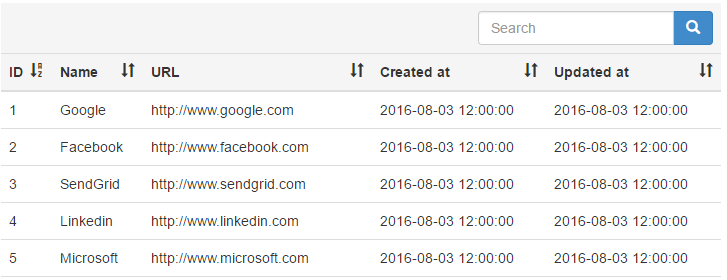
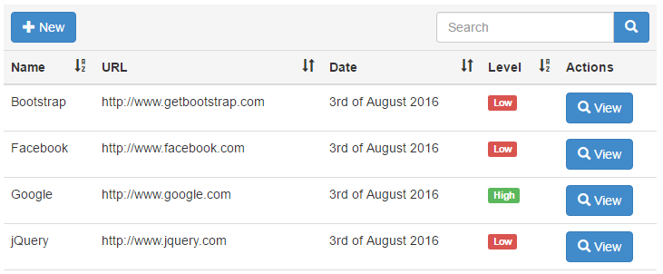

Tablelize
Customizable Laravel Eloquent html tables with pagination, search, sorting and buttons.
Installation
Require it directly with composer:
$ composer require softerize/tablelizeOr add it to composer.json:
{
"require": {
"softerize/tablelize": "^0.1.0"
}
}
After updating composer, add the ServiceProvider to the providers array in config/app.php
Softerize\Tablelize\TablelizeServiceProvider::class,Executing
Simple
In your route/controller, do the following:
Route::get('links', function(\Illuminate\Http\Request $request){
// Create the html table using your model and the request object
$tablelize = new \Softerize\Tablelize\Tablelize('\App\Models\Link', $request);
return view('home.index', compact('tablelize'));
});In your view simply generate the HTML:
@extends('layouts.app')
@section('content')
{!! $tablelize->generate() !!}
@endsectionThis is what you'll get (field names are fetched using trans('validation.attributes.'.$field)):

Advanced
If you want to customize fields and add buttons you can use the following logic:
Route::get('links', function(\Illuminate\Http\Request $request){
// You can define this array inside your model
$options = [
'fields' => [
'name',
'url',
[
'name' => 'updated_at',
'label' => 'Date',
'method' => 'formatDate'
],
[
'name' => 'level',
'label' => 'Level',
'method' => 'displayLevel',
'escape' => false,
'search' => false
]
],
'buttons' => [
[
'url' => 'new-link',
'icon' => 'glyphicon glyphicon-plus',
'text' => 'New'
]
],
'rowActions' => [
[
'url' => 'view-link',
'icon' => 'glyphicon glyphicon-search',
'text' => 'View'
]
]
];
$tablelize = new \Softerize\Tablelize\Tablelize('\App\Models\Link', $request, $options);
return view('home.index', compact('tablelize'));
});The view is the same as before. In your model you can define methods to display in your table:
public function formatDate($field_value) {
return date('jS \of F Y', strtotime($field_value));
// Or
// return $this->updated_at->format('jS \of F Y');
}
public function displayLevel($field_value) {
if($field_value === 'Google') {
return 'High';
}
return 'Low';
}The result of the advanced example is:

Relationships
If you want to use relationships in your table, you can do the following:
Route::get('links', function(\Illuminate\Http\Request $request){
// Query with a join statement
$query = \App\Models\Link::select('links.id', 'links.name', 'links.url', 'links.updated_at',
'links.level', 'types.name as type_name', 'types.name as type_name')
->join('types', 'types.id', '=', 'links.type_id');
// You can define this array inside your model
$options = [
'fields' => [
[
'name' => 'name',
'label' => 'Name',
'search' => 'links.name' // Prevent conflict with types.name
],
'url',
[
'name' => 'updated_at',
'label' => 'Date',
'method' => 'formatDate',
'search' => 'links.updated_at' // Prevent conflict with types.updated_at
],
[
'name' => 'level',
'label' => 'Level',
'method' => 'displayLevel',
'escape' => false,
'search' => false
],
[
'name' => 'type_name',
'label' => 'Type',
'search' => 'types.name' // Prevent conflict with links.name
]
],
'buttons' => [
[
'url' => 'new-link',
'icon' => 'glyphicon glyphicon-plus',
'text' => 'New'
]
],
'rowActions' => [
[
'url' => 'view-link',
'icon' => 'glyphicon glyphicon-search',
'text' => 'View'
]
]
];
$tablelize = new \Softerize\Tablelize\Tablelize($query, $request, $options);
return view('home.index', compact('tablelize'));
});The view is the same and you'll also need the model methods defined in the advanced example.
Customizing
You can customize the table by setting the instance parameters (of course) as well as by replacing the package assets.
Config
Execute the following command to publish the config file:
$ php artisan vendor:publish --provider="Softerize\Tablelize\TablelizeServiceProvider" --tag="config"This will add a tablelize.php config file to your config folder.
Translations
Execute the following command to publish the translation file:
$ php artisan vendor:publish --provider="Softerize\Tablelize\TablelizeServiceProvider" --tag="translations"This will add Tablelize translation to resources/lang/vendor/tablelize/.
Views
Execute the following command to publish the views:
$ php artisan vendor:publish --provider="Softerize\Tablelize\TablelizeServiceProvider" --tag="views"This will add Tablelize view(s) to resources/views/vendor/tablelize/. Currently it's only one big view, but it will be refactored (hopefully) soon.
Documentation
Creating the instance
In order to create a new instance, you have to instantiate the class \Softerize\Tablelize\Tablelize. The construct method takes 3 paramenters ($query, Request $request, array $options = []).
$query
You have 3 possibilities to use as the first parameter:
Use a model instance:
$tablelize = new \Softerize\Tablelize\Tablelize(new \App\Models\Link, $request, $options);Use a query builder object:
$query = \App\Models\Link::select('name', 'url', 'updated_at')->where('created_at', '>', '2016-08-01');
$tablelize = new \Softerize\Tablelize\Tablelize($query, $request, $options);Simply use a string with the model name (complete with all namespaces):
$tablelize = new \Softerize\Tablelize\Tablelize('\App\Models\Link', $request, $options);$request
This is the request object you get from Laravel.
$options
Array with all options. For a list of all possible options please check the next section.
Options
url
Define the base URL to be used by the search form.
Default: current URL ($request->path())
$options = [
'url' => 'links'
];id
In case you have more than one table in the same page (inside tabs for example), you can use the ID to differentiate them.
Default: current URL, with _ replacing the /
$options = [
'id' => 'links'
];idField
You can define the table id field name with this option. It will be used in the rowActions URL to set the entry ID (url('your/url', $entry->{$idField})).
Default: 'id'
$options = [
'idField' => 'link_id'
];fields
Array with fields definition. You can use methods as well for greater control over the display. Each field can be a simple string with the field name or an array with the following options:
- name: field name
- label: field label
- method: model method to be executed - optional
- escape: can be defined as false to for HTML values
- search: if you use joins in your query, you can define the search term used for the query - 'links.id' - to avoid errors. It can be defined as false to prevent searching this field
Default: fields will be automatically fetched from the query or the model - labels will be trans('validation.attributes.'.$field_name)
$options = [
'fields' => [
[
'name' => 'id',
'label' => 'ID',
'search' => 'links.id'
],
'name',
[
'name' => 'updated_at',
'label' => 'Date',
'method' => 'formatDate'
],
[
'name' => 'name',
'label' => 'Level',
'method' => 'displayLevel',
'escape' => false,
'search' => false
]
]
];queryString
Array with additional query string values. Useful if you need to define which tab the table is associated with. This way when you take an action on an specific table, the queryString parameters will be sent with the request.
Default: empty
$options = [
'queryString' => [
'tab' => 'links'
]
];sort and sortOrder
Default field for sorting and initial sort order.
Default: first field from the table in ASC order
$options = [
'sort' => 'name',
'sortOrder' => 'desc'
];buttons
Array with buttons definition. Each button can be a string with the HTML or an array with the following options:
- text: button text
- url: button link
- icon: if you want to add an icon to the button - optional
- css: class to be used by the button - optional - by default all buttons will be 'btn btn-primary'
- title: title attribute of the button - optional
Default: none
$options = [
'buttons' => [
[
'url' => 'new-link',
'icon' => 'glyphicon glyphicon-plus',
'text' => 'New',
'title' => 'New link'
],
[
'url' => 'settings',
'icon' => 'glyphicon glyphicon-cog',
'text' => 'Settings',
'title' => 'Settings',
'css' => 'btn btn-success'
]
]
];rowActions
Array with buttons for each entry. Each button can be a string with the HTML or an array with the following options:
- text: button text
- url: button link - the idField will be added as a parameter for each entry
- icon: if you want to add an icon to the button - optional
- css: class to be used by the button - optional - by default all buttons will be 'btn btn-primary'
- title: title attribute of the button - optional
- condition: method used as a condition to show (or not) the button - optional
Default: none
$options = [
'rowActions' => [
[
'url' => 'view-link',
'icon' => 'glyphicon glyphicon-search',
'text' => 'View',
'title' => 'View entry'
],
[
'url' => 'delete-link',
'icon' => 'glyphicon glyphicon-remove',
'text' => 'Delete',
'title' => 'Delete',
'css' => 'btn btn-danger'
],
[
'url' => 'approve-link',
'icon' => 'glyphicon glyphicon-ok',
'text' => 'Approve',
'title' => 'Approve',
'css' => 'btn btn-success',
'condition' => 'notApproved'
]
]
];noEntriesMsg
In case you want to change the message shown when there are no entries you can do that using this parameter.
Default: 'No entries found.' or whatever you define in the translation file.
$options = [
'noEntriesMsg' => 'Nothing here!!'
];Support
In case you need support, please create an issue and we will check it as soon as possible.
If you want to hire a professional support, let us know at http://www.softerize.com/contact/.